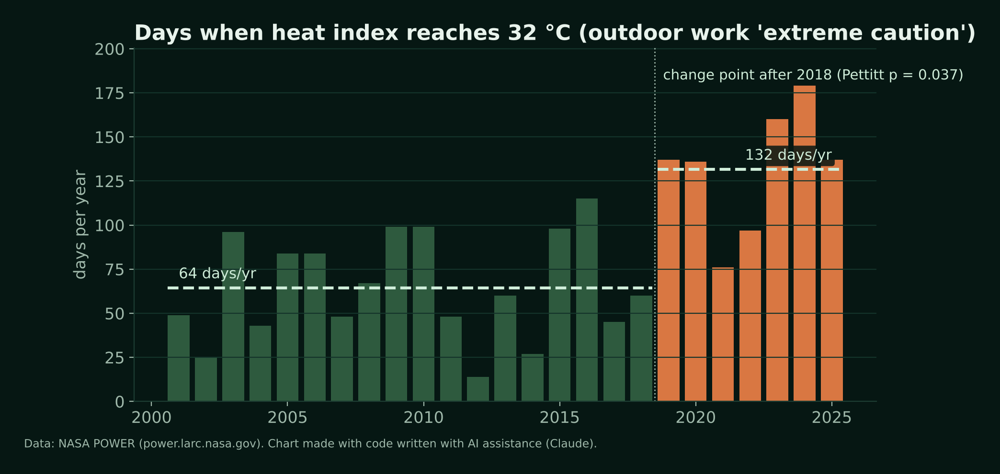
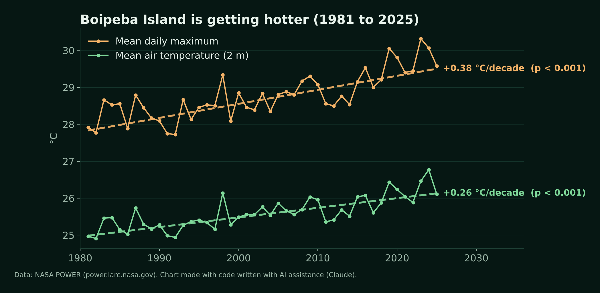
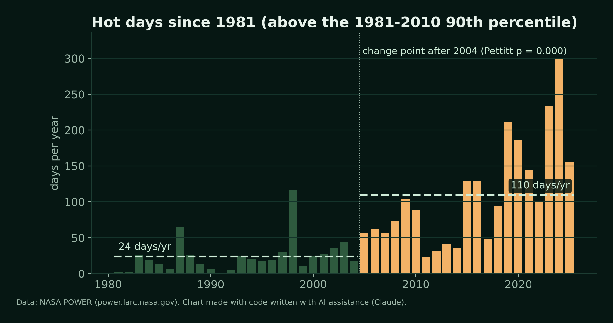
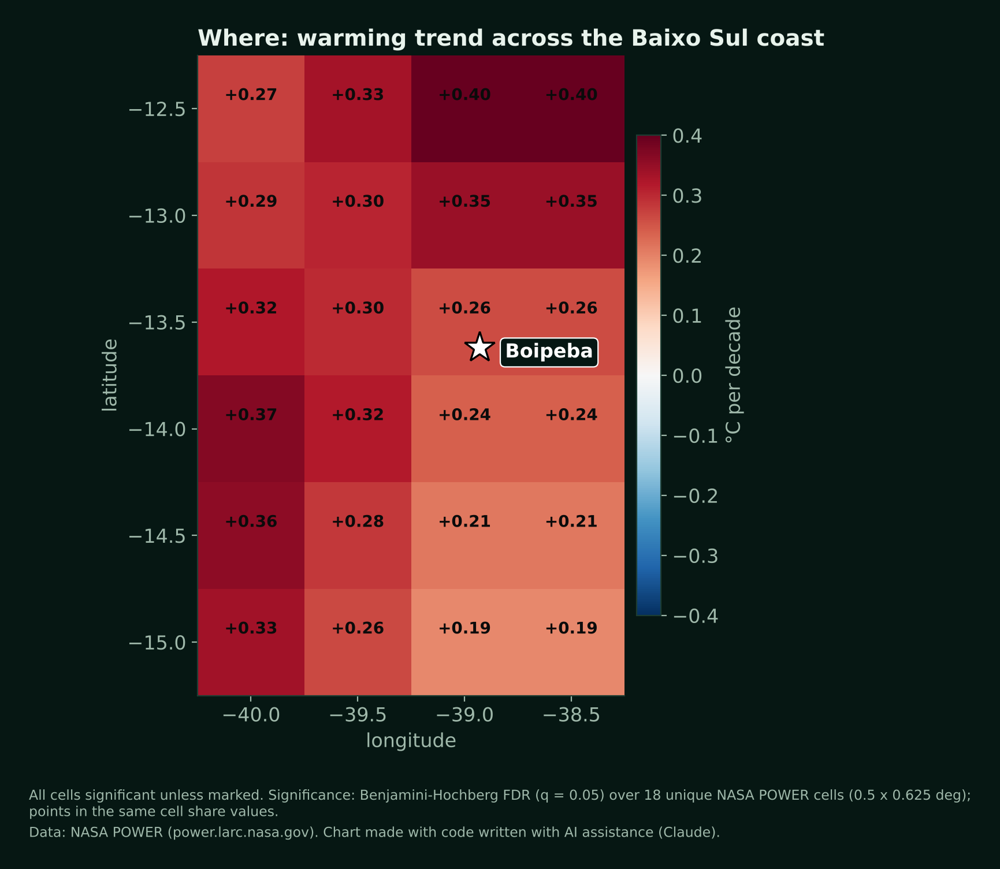
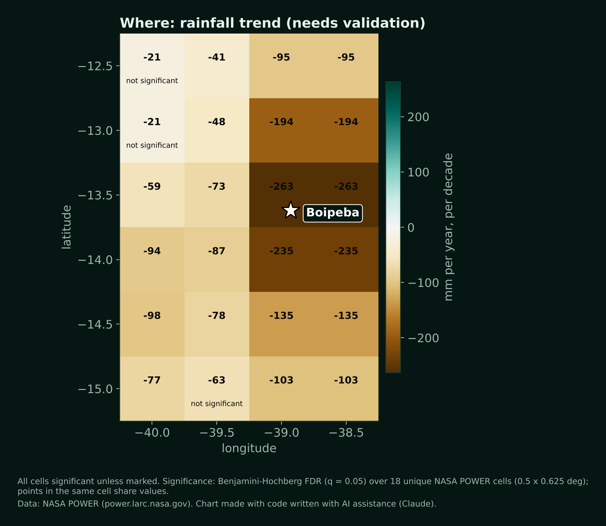

The people side: heat risk for collectors


A live trend detective built on NASA data. Pick any place on Earth and it answers four questions: what is changing, where, how much, and is the change statistically significant. We built it for Boipeba Island, Brazil, where our community recycling project works, and found that dangerous heat for outdoor workers has doubled.
Team Raízes do Futuro: Milena Calasans, Maria Clara Bastos, Talyta Silva
Click the map or choose a place. The page requests 45 years of monthly data from the NASA POWER API, runs the statistics in your browser and explains the result in plain language.
Choose a place and press Investigate.
Bars: annual values. Dashed line: Theil-Sen trend. Dotted line: detected change point. "Scan the area" tests 9 neighbouring NASA POWER cells and colours them on the map (where), with false discovery rate control.
Uses NASA POWER hourly temperature and humidity to compute the heat index (NOAA/NWS formula) and compares 2001 to 2005 with 2021 to 2025: in which months and hours does the heat index reach 32 °C, the level of extreme caution for outdoor work? Takes about 20 seconds (10 years of hourly data).
Raízes do Futuro, winner of the UNICEF Brazil Youth Challenge Blockchain 2026, organises validated waste collection on Boipeba. Collectors work outdoors, on foot and by boat. We asked what 45 years of NASA data say about the climate they work in.
Days when the heat index reaches 32 °C (NWS "extreme caution" for outdoor work) doubled: from 64 to 132 days a year.
Every unique NASA POWER cell on the Baixo Sul coast shows significant warming, +0.19 to +0.40 °C per decade.
Mean daily maximum: 28.3 °C in 1981 to 1990 vs 29.6 °C in 2016 to 2025. Hot days went from 24 to 110 a year.
Mann-Kendall with autocorrelation correction. Pettitt change points: hot days jump after 2004, dangerous heat days after 2018.





NASA POWER shows annual rainfall at Boipeba falling from about 1,880 mm (1981 to 1990) to about 910 mm (2016 to 2025). Northeast Brazil did suffer severe droughts in 2012 to 2017, but a halving is larger than expected, and reanalysis rainfall trends can carry artifacts from changes in the observing system. We report it as a signal that still needs confirmation with GPM IMERG and local gauges.
| Trend detected | What Raízes do Futuro does with it |
|---|---|
| Dangerous heat days doubled; risky season now November to May | Heat-aware collection calendar: finish routes by 8 a.m. (February to April) or 9 a.m. (rest of the risky season), water and shade at drop-off points, pause rule when the heat index forecast passes 32 °C. |
| Warming everywhere on the coast | Evidence for partners and funders that climate adaptation belongs in the Children's Fund priorities for health and education. |
| Possible drying (to be validated) | Cross-check with GPM IMERG and local gauges, then relate rainfall to the waste reaching mangroves and beaches using the project's collection records. |
| Any community can run it | The trend detective above works for any coordinates, with the same open code, so other coastal projects can do the same. |
T2M, T2M_MAX, T2M_MIN, PRECTOTCORR, RH2M.analysis/ (shared statistics in stats.py); the live tool runs the same tests in JavaScript and gives identical results.Climate trend tools exist, mostly for researchers: the KNMI Climate Explorer computes trends and significance for any location, NOAA Climate at a Glance publishes regional time series, and Google Earth Engine or Climate Engine run Mann-Kendall and Sen's slope with an account and code. This tool brings the same rigour to any community without login or code, answers all four questions plus "since when" in plain language, and turns the result into a decision: when it is safe to work outdoors.